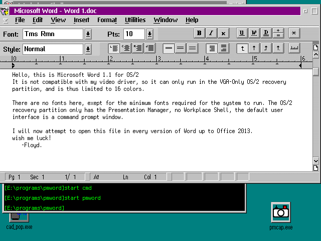
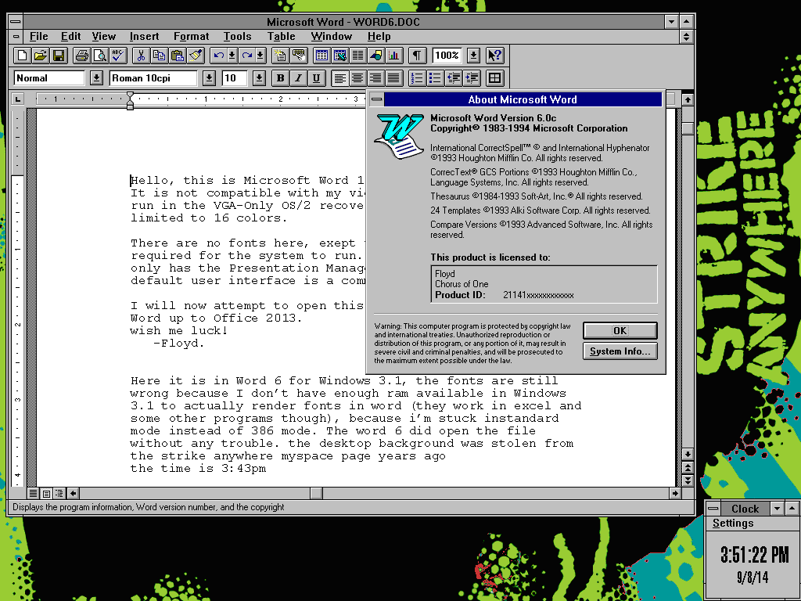
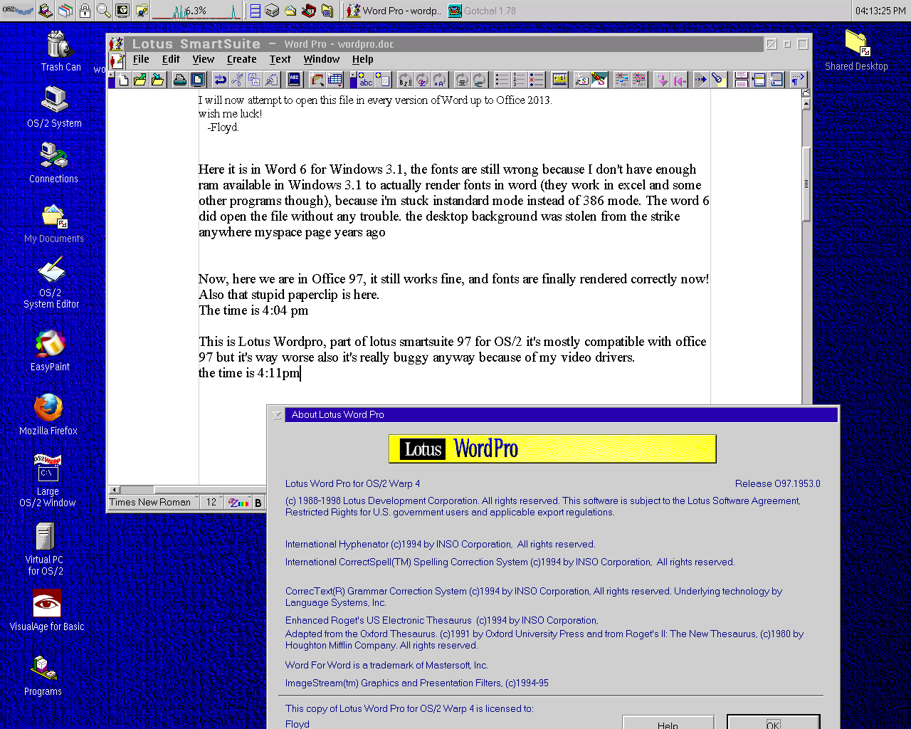
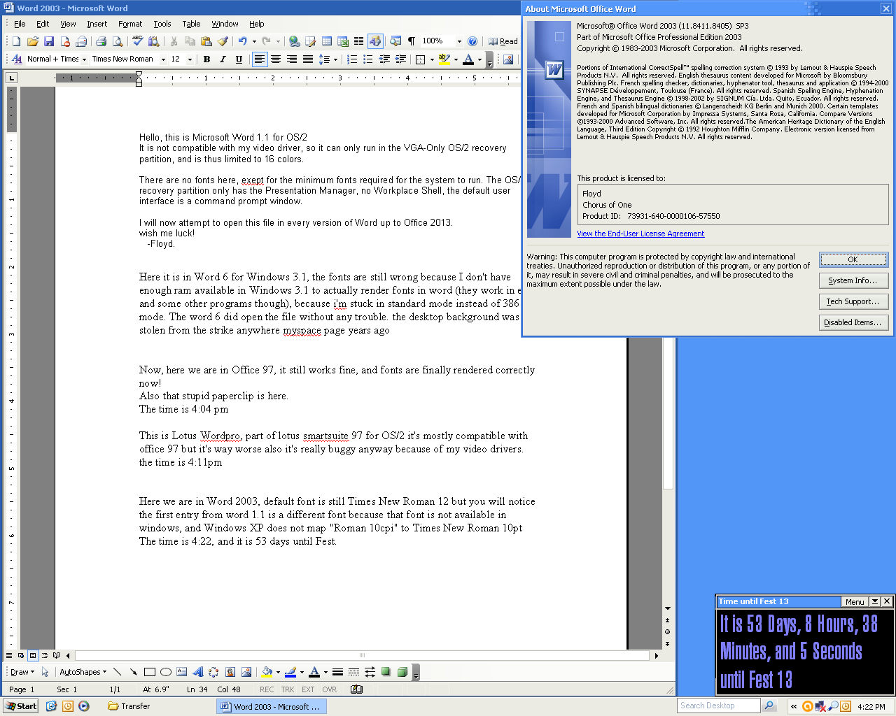
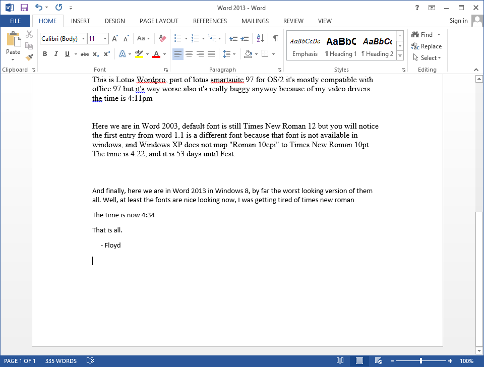
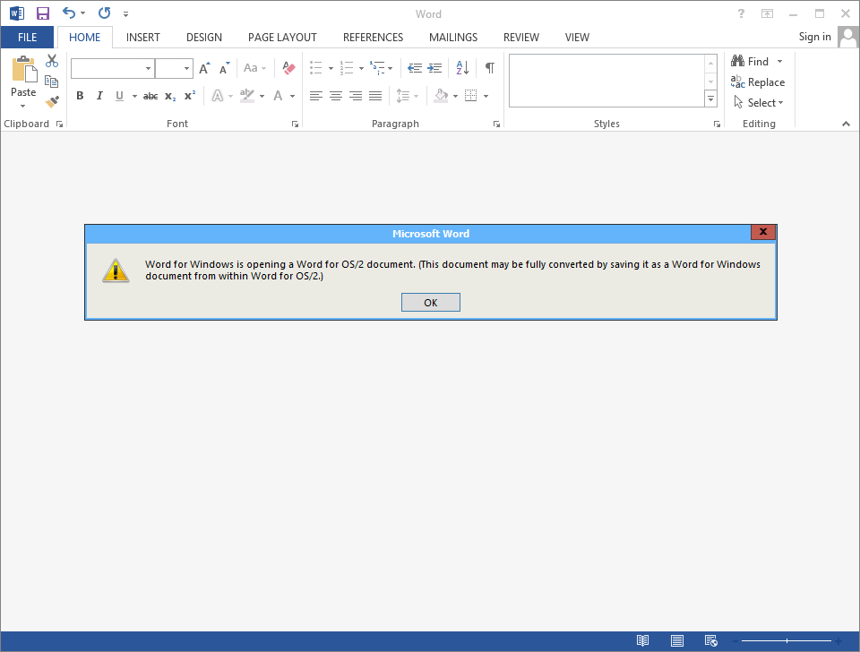
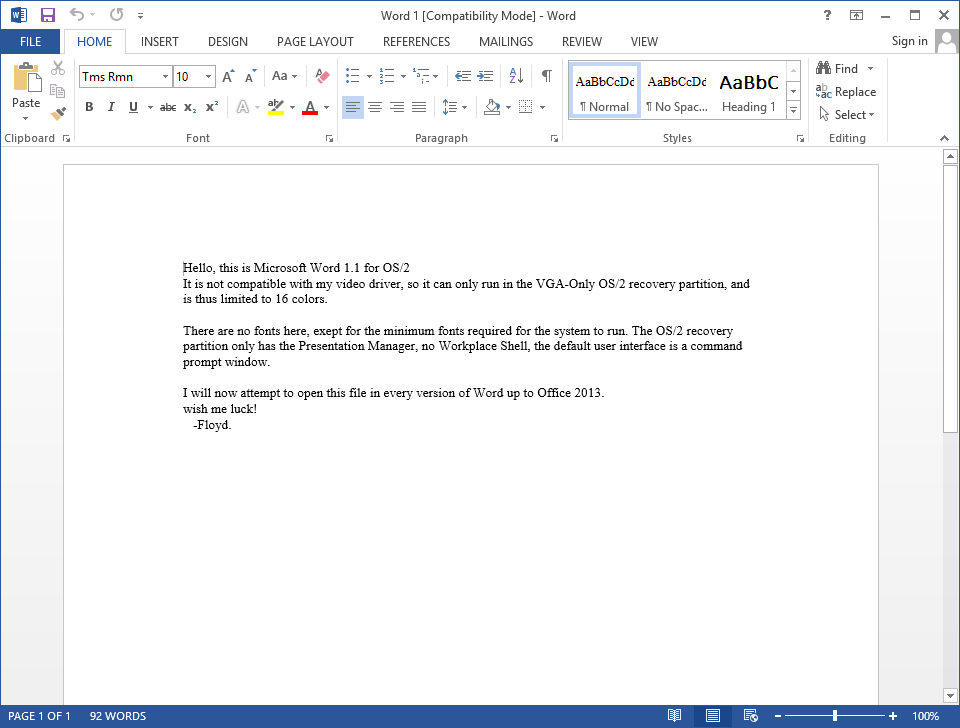

Word 1.1 for OS/2

Word 6.0 (Office 4.0) for Windows 3.1

Microsoft Office Word 1997 (Windows 98)

Lotus Wordpro 1997 for OS/2

Microsoft Office Word 2003 (Windows XP)

Microsoft Office Word 2013 (Windows 8)

what happens when you try to open a word 1.1 file in word 2013

but it will open correctly.
a document created in Word 1.1 for OS/2 and opened in all of the versions of Microsoft Word i have running (not in virtual machines)
Read what is in the pictures to find out more.
the last two are what happens when you try to open the original Word 1.1 file in Office 2013